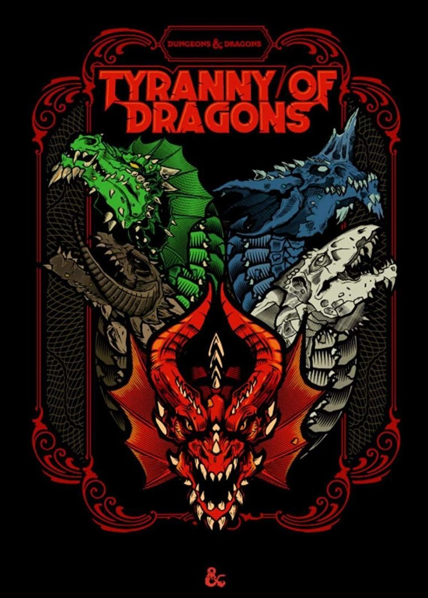
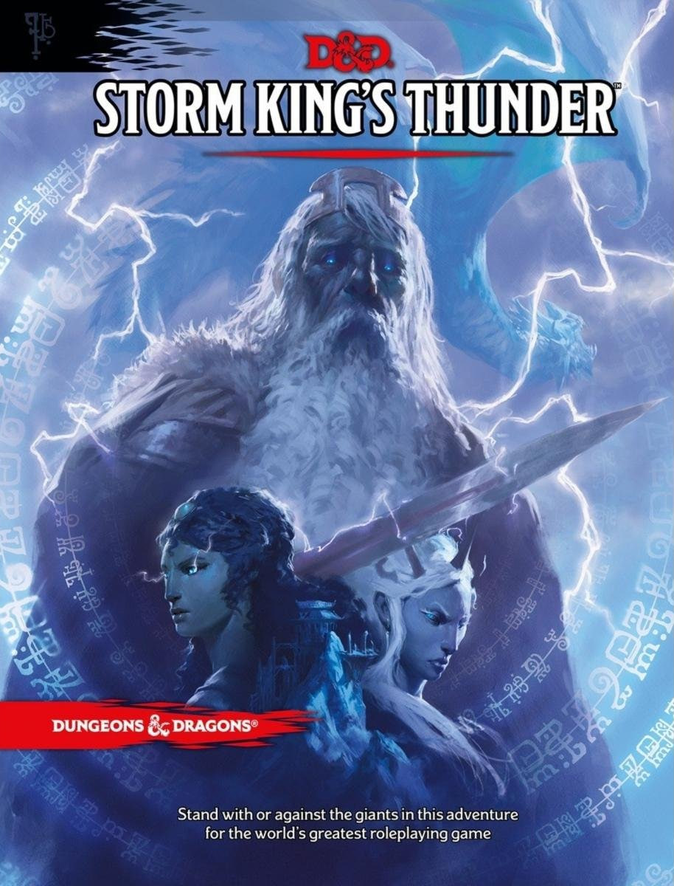
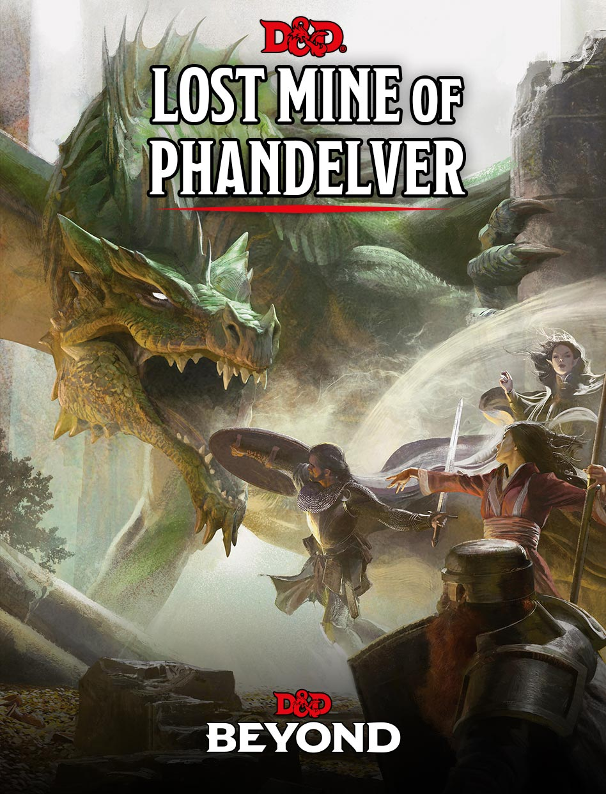
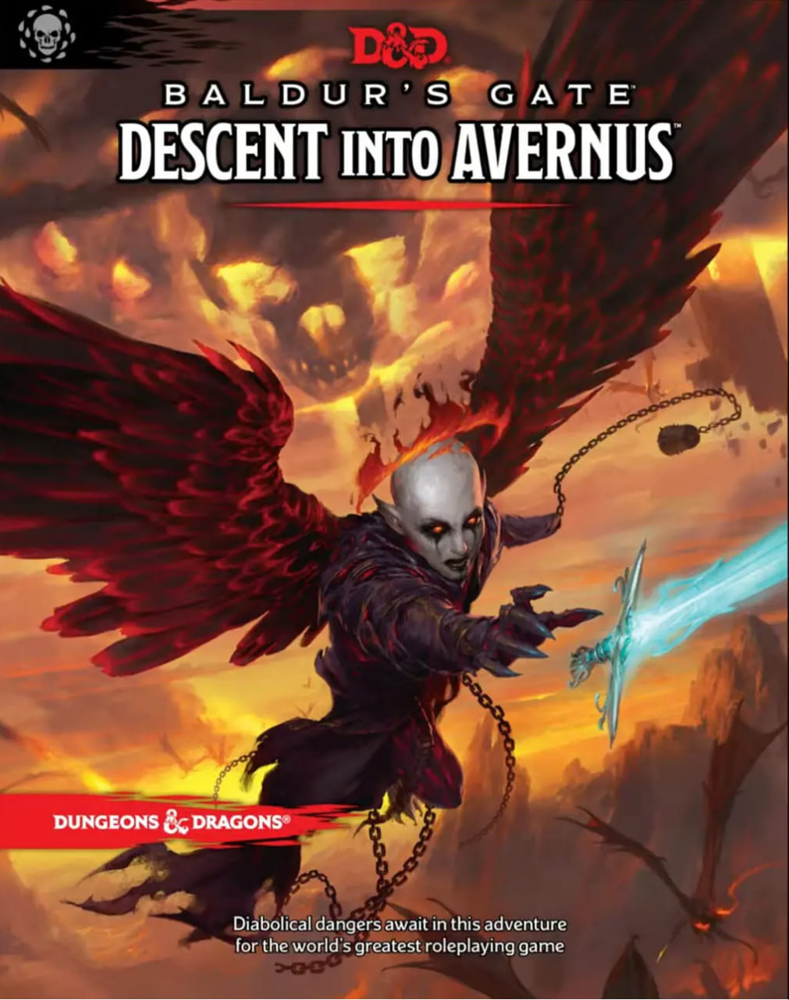

| Тирания Драконов
Тирания Драконов — эпическая история, изложенная в двух приключениях, начинающаяся событиями, описанными в приключении «Клад Королевы Драконов» и завершающаяся приключением «Восстание Тиамат». |
 |
|---|---|
| Гром Штормового короля
Штормовой король Гекатон "таинственным образом" отсутствует в Забытых Королевствах, оставляя расы гигантов, которые он обычно держит в узде, свободными для вторжения по всему королевству. |
 |
| Затерянные рудники Фандельвера
Персонажи расследуют проблемы, случающиеся в окрестностях городка Фандалин, обнаруживая, что нападения гоблинов, появление терроризирующей город группы злодеев и прочее, связаны с планами дроу по поискам и исследованию затерянных во времена вторжения орков шахт.. |
 |
| Спуск в Авернус
Добро пожаловать в Врата Бальдра, город амбиций и коррупции, расположенный на перекрестке Побережья Мечей. Вы только начали свое приключение, но уже оказываетесь втянуты в заговор, который раскинулся в тени Врат Балдура к линии фронта самолеты, охватывающей кровь войны! Есть ли у вас все необходимое, чтобы использовать адские боевые машины и гнусные контракты против архидьявола Зариэль и ее дьявольских орд? И можете ли вы когда-нибудь надеяться благополучно найти дорогу домой, столкнувшись с бесконечным злом Девяти Адов? |
 |